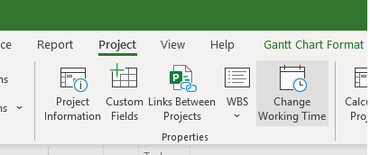
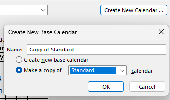
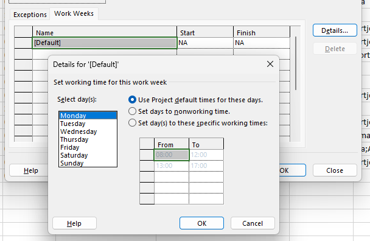
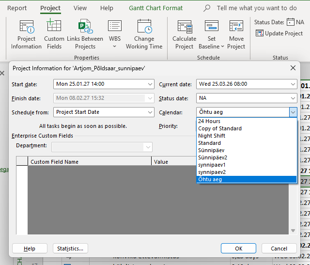
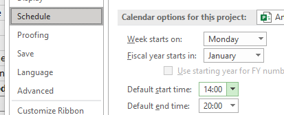
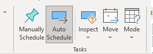
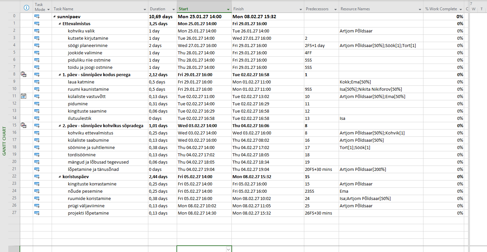

01
Ava „Muuda tööaega"
Mine lindi ülaosas Projekt-vahekaardile ja klõpsa Muuda tööaega (Change Working Time).
// pilt_01.png

Kuidas luua ja rakendada kohandatud tööajakalendrit — samm-sammult.
Vaikimisi kasutab MS Project standardkalendrit — tööaeg kell 08:00–17:00. Kui sinu projekt töötab muudel kellaaegadel (nt pärastlõunane vahetus, öövahetus), tuleb luua kohandatud baasikaender ja rakendada see projektile. See juhend viib sind läbi kogu protsessi.
Mine lindi ülaosas Projekt-vahekaardile ja klõpsa Muuda tööaega (Change Working Time).

Avanenud dialoogis klõpsa Loo uus kalender (Create New Calendar). Anna sellele selge nimi, nt Pärastlõunane vahetus, ja vali Koopia standardkalendrist, et põhiseaded säiliksid.

Samas dialoogis klõpsa vahekaarti Töönädalad (Work Weeks) → vali vaikimisi rida → klõpsa Üksikasjad (Details). Vali kõik tööpäevad (E–R), vali Määra kindlad tööajad ja sisesta oma kellaaeg — nt 14:00 – 18:00. Klõpsa OK.

Mine Projekt-vahekaardile → Projekti teave (Project Information). Leia Kalender-rippmenüü ja vali oma uus kalender. Klõpsa OK.

Mine Fail → Suvandid → Ajakava (Schedule). Muuda Vaikimisi algusaeg vastavaks — nt 14:00. See peab ühtima sinu kalendriga, muidu ülesanded ei joandu õigesti.

See on kõige levinum põhjus, miks kalender ei toimi. Vali kõik ülesanded (Ctrl + A), mine Ülesanne-vahekaardile ja klõpsa Automaatne ajakava (Auto Schedule). Kontrolli alloleva olekuriba — seal peaks seisma „Uued ülesanded: automaatne ajakava".

Käsitsi ajastatud, ignoreerivad ülesanded täielikult kalendrit, piiranguid ja sõltuvusi. Auto Schedule peab olema aktiivne.
Vajuta F9 või mine Projekt → Arvuta projekt (Calculate Project). Kõik ülesanded arvutatakse ümber vastavalt uuele kalendrile — nt 08:00 asemel algavad ülesanded nüüd 14:00-st.
